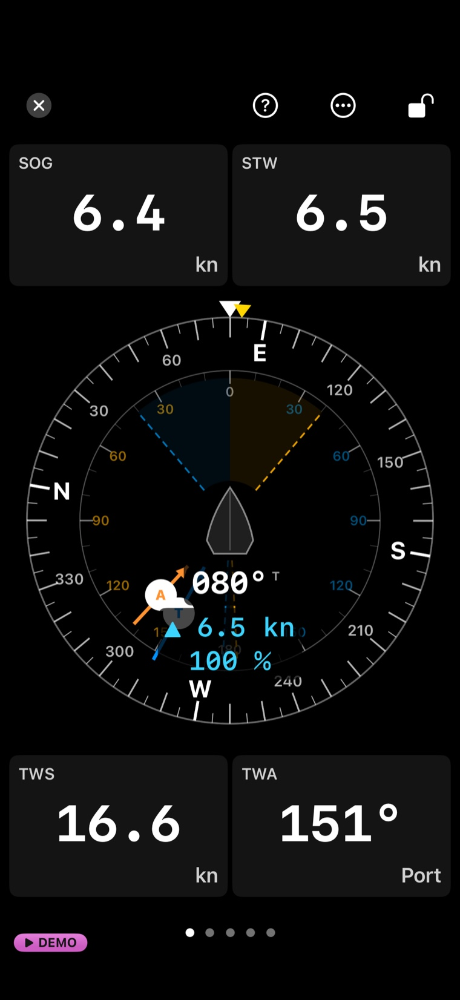

Voyage journal, racing & trim
Record on board. Understand afterwards.
Etmar records your voyage, counts down the start, remembers your trim and shows after the race where the time went. Built for one hand, wet fingers and a two-second glance. Offline on board, with or without an onboard network.
Cast off with one tap, the track runs in the background, and the app detects mooring by itself.
Countdown with sound and voice, ping the start line, distance to the line, the course as a list.
The facts of every race are free. Pro tells you what a tack cost and where the extra distance was.
What Etmar does
Nine areas. One tap takes you to the full list, with tier and data source for every feature.
- AutomationDeparture, recording and mooring by themselves.
- Onboard network (NMEA)NMEA 2000 and 0183 over the boat’s Wi-Fi.
- Voyage journal and voyageEntries, stages, reports, export.
- Map and wind, before and after the voyagePlanning and looking back, wind now, harbours.
- RacingCountdown, start line, course, facts.
- Analysis afterwardsWhat it cost, and why.
- TrainingMeasured runs, manoeuvre series, collect data.
- Boat, trim and WorkshopTrim diary, sails, polar, Workshop.
- System and dataDemo mode, data, night mode.
More with an onboard network, complete without one
One NMEA gateway on the boat’s Wi-Fi is enough, and Etmar shows wind and speed through water, stores the wind with every track point and even casts off by itself. Without an onboard network nothing stays empty: course and speed come from GPS, air pressure from the iPhone, wind after the voyage from the nearest station or the model.

Free and Pro
Free
Recording, managing and the facts: voyage journal and recording, pre-start with start line, instruments from the iPhone and the onboard network, trim diary, Workshop, planning on shore, export and reports. Free records everything the boat and the onboard network deliver.
Pro
The analysis afterwards: manoeuvre cost, extra distance, start summary, form trend, season comparison, sailed polar. Plus your own instrument pages and the sailing compass. €24.99 a year with a 14-day trial or €4.99 a month (prices in Germany).
Demo mode in the app simulates an onboard network and unlocks Pro. That lets you try everything before you buy or connect anything.
Table of contents
All pages and their sections. Every entry jumps to its place.
Handbook
- Layout: four tabs
- The map as your workspace
- Free and Pro — and the demo tier
- Journal & voyage
- Stage plan
- Map, seamarks & offline
- Regatta: pre-start & race
- Race course step by step: NSV Wednesday race
- Race analysis
- Training with measured runs
- Trim diary
- Boat, sails & polar
- Instruments & NMEA
- Harbour guide
- Workshop
- Sailing calendar
- Settings & data backup
- Analyses in detail
- Abbreviations